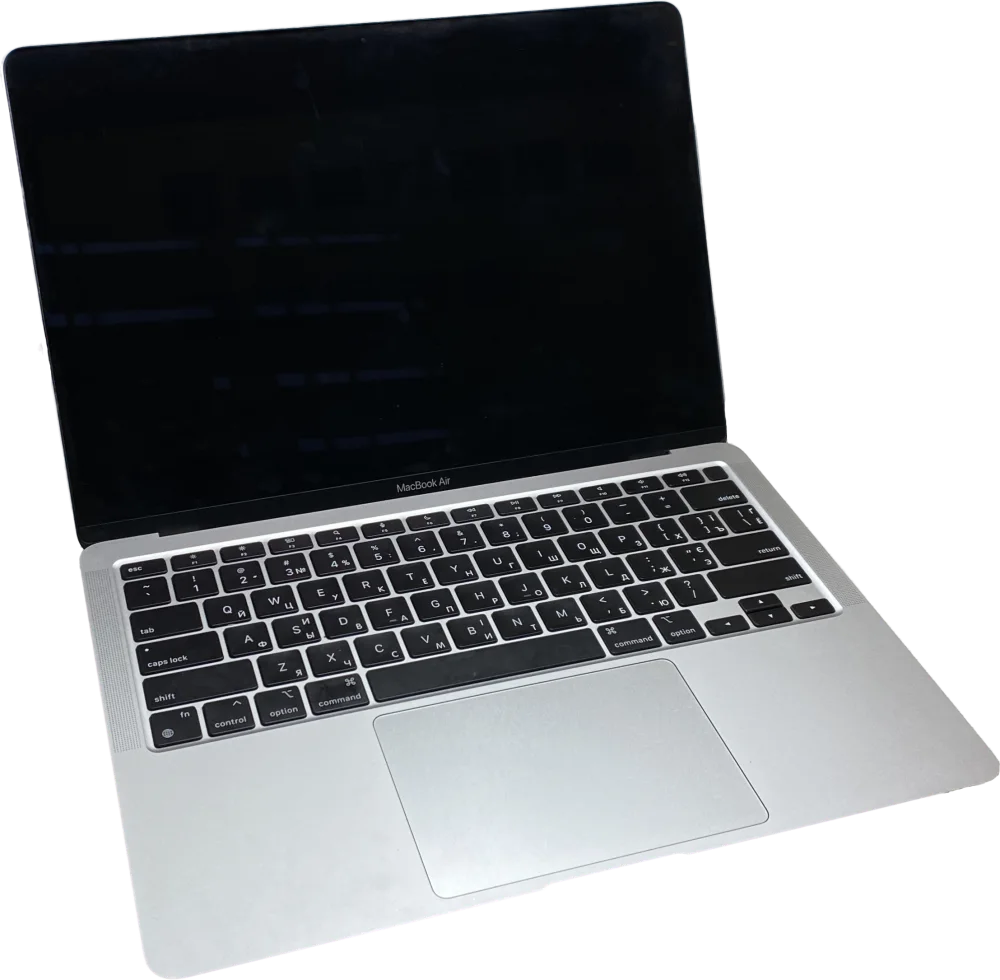
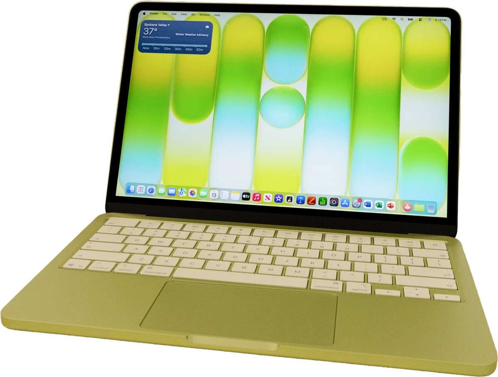

Four of the biggest games Windows ever got, and not one of them ships a Mac build. Wrapped by Mullion, they open from the Dock like anything else you own.
Counter-Strike 2
Valve · Source 2
Played online on a VAC-secured server, voice chat and all. The wrapped app boots Steam inside its own prefix and hands the game straight over.
Grand Theft Auto V
Rockstar Games · RAGE
Los Santos, DirectX 11, and not one Mac build in the thirteen years since it launched. This is the shape of game the engine exists for.
The Last of Us Part II
Naughty Dog · Remastered
A PlayStation exclusive that came to PC and stopped there. Windows only — like everything else on this page.
Entry level
You do not need the expensive Mac.
An M1 MacBook Air from 2020, or a MacBook Neo — the cheapest laptop Apple has ever sold — will hold a Cyberpunk-class game at 30–40 fps, and hold it smoothly. One hop to Metal instead of two is what buys you the difference.

MacBook AirM1 · 2020 · no fan

MacBook NeoA18 Pro · 2026 · no fan
Help it breathe
MacBook Neo · No Man's Sky
As it ships
30 fps 105 °C
Cooled properly
58 fps 83 °C
A fanless Mac runs out of thermal headroom long before it runs out of chip — nothing changed here but the path the heat takes out. A stand, a cooling pad, or a real thermal mod is the cheapest frame rate you will ever buy.
Tested by ETA Prime — a stock MacBook Neo against the same machine
with a copper heat spreader fitted. Written up by
Notebookcheck
and Hackaday.